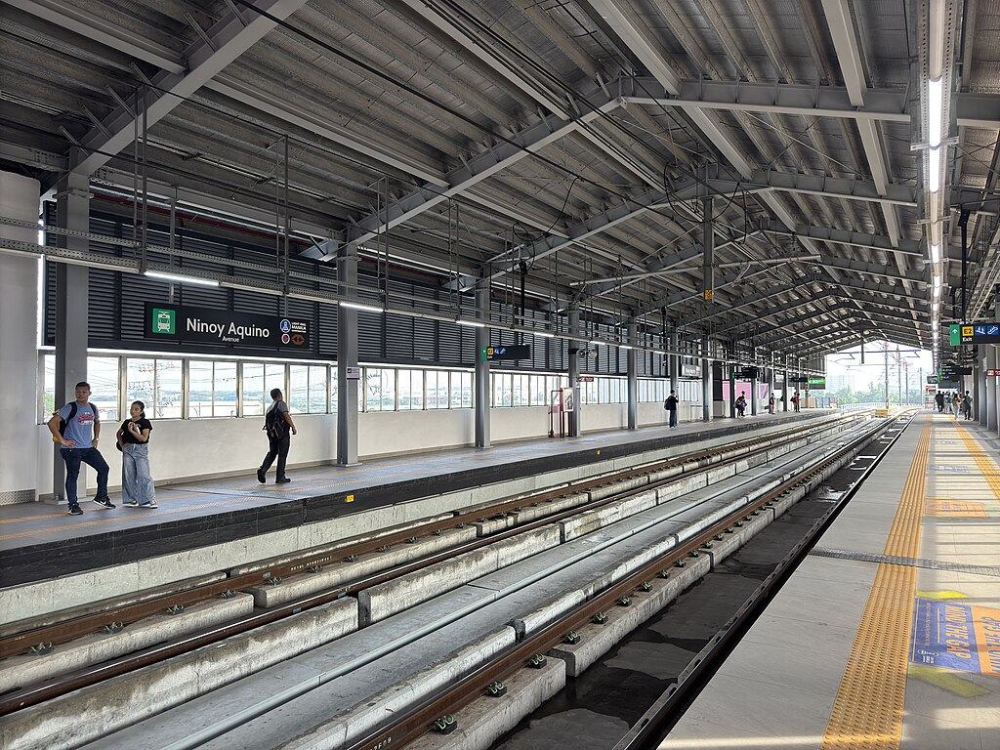
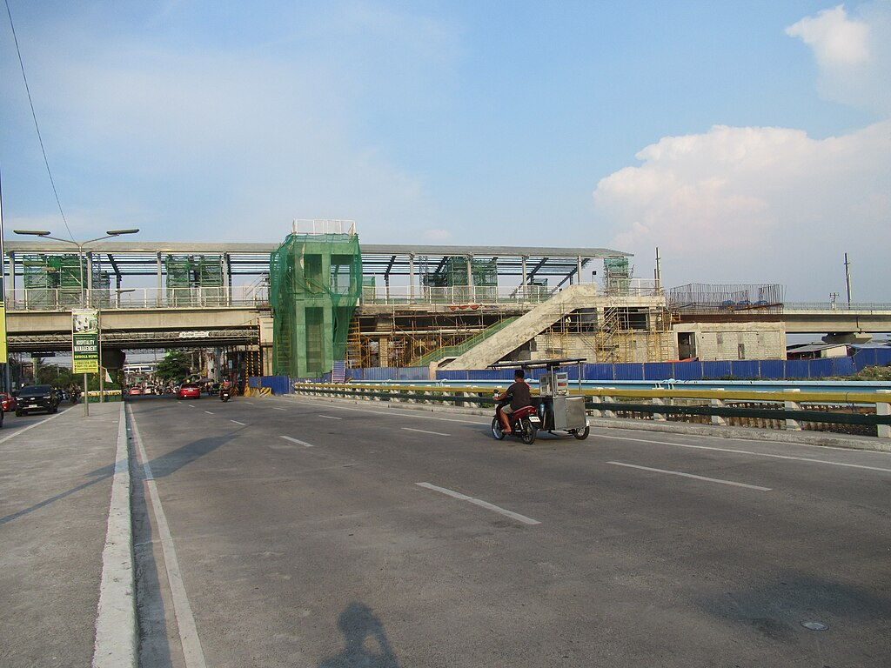
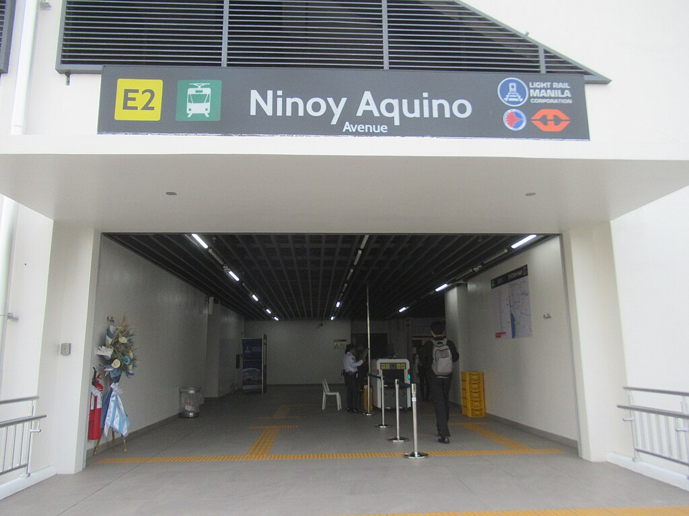

Ninoy Aquino
LRT-1 station
Ninoy Aquino station is an elevated Light Rail Transit (LRT) station located on the LRT Line 1 (LRT-1) system in Santo Niño, Parañaque City. The station is part of the Line 1 Cavite Extension Project, which opened to the public on November 16, 2024. The station is built on the east bank of the Parañaque River and is above its namesake, Ninoy Aquino Avenue, which is in turn named after Ninoy Aquino, a former senator who was assassinated at the nearby airport in 1983.
The station is the 2nd station for trains headed to Fernando Poe Jr., the 24th station for trains headed to Dr. Santos, and is one of the five LRT-1 stations in Parañaque; the others are Redemptorist, MIA, Asia World and Dr. Santos.
The station is the 2nd station for trains headed to Fernando Poe Jr., the 24th station for trains headed to Dr. Santos, and is one of the five LRT-1 stations in Parañaque; the others are Redemptorist, MIA, Asia World and Dr. Santos.
| Ninoy Aquino | |||||||
|---|---|---|---|---|---|---|---|
|  | |||||||
| General information | |||||||
| Location | Ninoy Aquino Avenue, Santo Niño, Parañaque, Metro Manila, Philippines | ||||||
| Owned by | Light Rail Transit Authority | ||||||
| Operated by | Light Rail Manila Corporation | ||||||
| Line(s) | LRT Line 1 | ||||||
| Platforms | 2 (2 side) | ||||||
| Tracks | 2 | ||||||
| Connections | None | ||||||
| Construction | |||||||
| Structure type | Elevated | ||||||
| Parking | No | ||||||
| Bicycle facilities | No | ||||||
| Accessible |
Concourse: All entrances
Platforms: All platforms |
||||||
| Other information | |||||||
| Status | Operational | ||||||
| Station code | NA | ||||||
| History | |||||||
| Opened | November 16, 2024 | ||||||
| Services | |||||||
|
|||||||

Known as Ninoy Aquino station during its inception, the station was first planned as a part of the Line 1 South Extension plan, which calls for a mostly elevated extension of approximately 11.7 kilometers. The extension will have 8 passenger stations with an option for 2 future stations (Manuyo Uno and Talaba). The project was first approved on August 25, 2000, and the implementing agreement for the project was approved on January 22, 2002. However, construction for the extension was repeatedly delayed until the project was shelved years later.
Ninoy Aquino Avenue station under construction in April 2023
The plans for the southern extension project were restarted as early as 2012 during the Benigno Aquino III administration and was expected to begin construction in 2014, but was delayed due to right of way issues. The issues were resolved in 2016 and the project broke ground on May 4, 2017. Meanwhile, construction works on the south extension began on May 7, 2019, after the right of way acquisitions were cleared. Initially planned to be built near the west bank of the Parañaque River in Don Galo, the station was built on the river's east bank in Santo Niño, next to the Santo Niño Bridge. This aligned with the route's alignment along the river to prevent the demolition of existing structures.

Station entrance
Nearing the end of its construction in 2024, the station was later renamed Ninoy Aquino Avenue station, specifically after the avenue crossing beneath it. On November 15, 2024, Phase 1 of the LRT Line 1 Extension, where the station is part of, was inaugurated by President Bongbong Marcos; the LRMC management announced the start of its commercial operations to be on the following day.
The station is accessible to passengers who wish to transfer to road PUVs such as jeepneys and UV Express. Jeepneys ply the Baclaran–Sucat and Sucat–Lawton (or Sucat–Lawton via Mall of Asia) routes. Destinations include Ninoy Aquino International Airport (NAIA), Manila, Pasay, Parañaque, and Muntinlupa.
The station is nearby the Global Airport Business Park Gate 1 along Ninoy Aquino Avenue and other air cargo logistics provider warehouse such as F2 Logistics. The station is also near the Terminal 1 of Ninoy Aquino International Airport, the Duty Free Philippines Fiestamall store, Parañaque Cathedral, barangay La Huerta, S&R Membership Shopping Parañaque branch, and Gedcor Square Building, whose tenants are mostly forwarding companies. It is also easily accessible to educational institutions such as Parañaque Science High School, Santo Niño National High School, La Huerta Elementary School, and Polytechnic University of the Philippines Parañaque, Parañaque Central Post Office, and the residential areas of Barangays Santo Niño and La Huerta in Parañaque. It is the sole station along Ninoy Aquino Avenue before it crosses over to Dr. Santos Avenue.
| Operational | |
|---|---|
|
Dr. Santos
Ninoy Aquino Asia World MIA Redemptorist Baclaran EDSA Libertad Gil Puyat Vito Cruz Quirino Pedro Gil |
United Nations
Central Carriedo Doroteo Jose Bambang Tayuman Blumentritt Abad Santos R. Papa 5th Avenue Monumento Balintawak |
| Fernando Poe Jr. | |
| Under construction | |
|
Las Piñas
Zapote |
Niog
North Triangle |